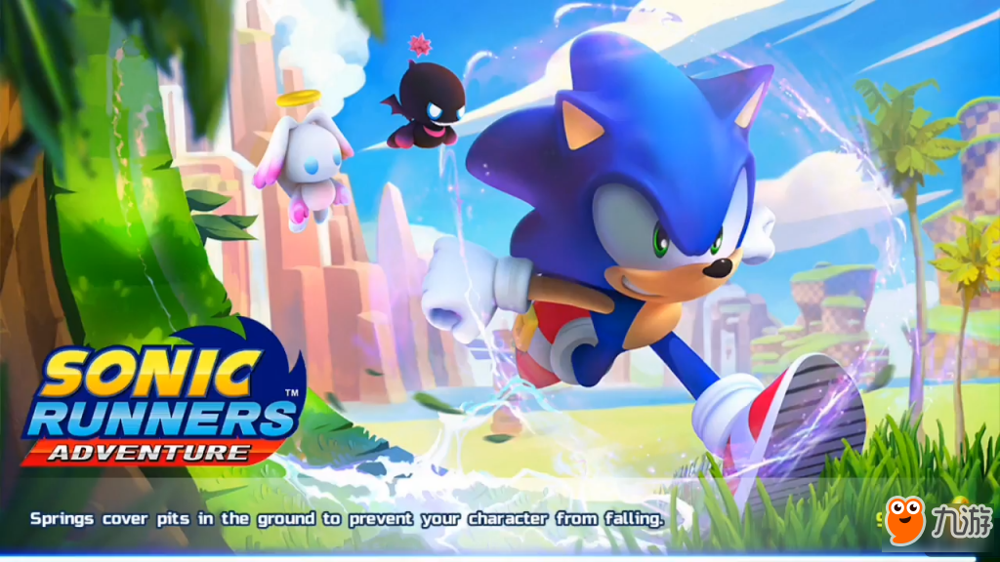

最近在苹果商店上迎来的僵尸类的游戏作品似乎比较多，刚刚在不久之前和玩家们的一起看了剧情像的RPG游戏《丧尸纪元》，游戏开发商GameSpire又在苹果商店当中正式推出了他们的僵尸题材的新作《死亡瘟疫：僵尸爆发（DEAD PLAGUE: Zombie Outbreak）》。游戏中由于秘密研究中心泄露了知名的病毒，在温暖的热带环境中病毒迅速传播，把人变成了愤怒的僵尸变异体。为了防止病毒继续疯狂的蔓延，玩家必须深入到最危险的感染地区采集DNA样本找到治愈这种病毒的办法，而那些僵尸可不会对玩家嘴下留情。
游戏中的单人战役以关卡的形式推进，在每一个关卡中都会有相对应的故事背景以及玩家所需要完成的任务，而玩家所要完成的任务类型也是多种多样的，有的是需要玩家找到逃离该地点的载具，例如车或者船，而有的任务则是需要玩家在某地点坚持守住阵地，一直到支援力量到来。除了主线任务之外，游戏中还有两个支线任务，玩家是否完成支线任务并不会影响到玩家的通关，不过能够完成支线任务玩家将获得更丰厚的奖励。所以，还是尽力而为吧。

游戏中采用了双摇杆的操作方式，与其他采用同类型的游戏一样，左侧摇杆负责控制角色的移动，而右侧的摇杆则负责控制角色射击的方向，在游戏中玩家将以俯视的视角进行体验，所以角色周围的情况都能够尽收眼底，玩家可以在僵尸接近角色之前就发现他们并将它们全部消灭掉，而且在前进的过程中，玩家还有机会拾取到医疗包、弹药还有一些新武器等等，所以游戏的难度总体来说其实并不算特别大，不过游戏也为喜欢挑战的玩家准备了专家模式，在该模式下玩家将面临更严峻的考验。
游戏中的武器系统还是非常丰富的，不过玩家并不是在游戏刚开始的时候就能将这些武器全部解锁，大部分武器都是需要玩家完成相应的关卡之后才能顺利解锁的，而有的玩家并不能直接在游戏中获取还需要利用钞票进行购买。此外游戏中的武器都是可以进行升级的，升级之后武器将会给予敌人更多的伤害。此外游戏中还有大量的道具可以选择，地雷、手榴弹等等都可以辅助玩家将敌人消灭，尤其是需要在短时间内消灭大量敌人的时候，这些都是都是比较有效率的。
游戏中在画面细节上的处理还是比较到位的，除了射击造成的血光冲天之外，游戏中光影效果以及动态天气环境效果也都是比较逼真的。对于喜欢此类题材的玩家来说，本作还是有可圈可点的地方的。目前游戏已经在苹果商店当中正式上架了，而且在游戏中已经包含了中文，虽然游戏中部分翻译实在让人不忍心吐槽，不过大部分内容还是可以看到的，对本作感兴趣的玩家都可以从苹果商店当中免费下载游戏进行体验。